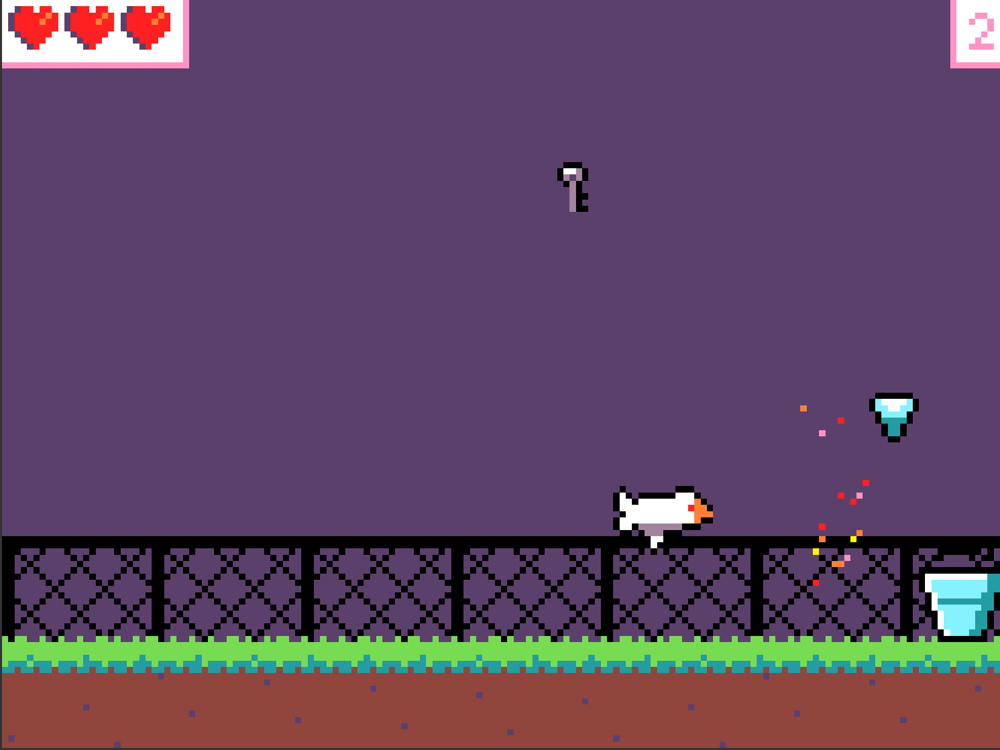

Year 5-6 STEM Launchpad · MakeCode Arcade, Blocks
50 minutes · ~22 students · one laptop each · one teacher
| Time | Activity | Teacher focus |
|---|---|---|
| 0-3 | Play | “Click the game. Left/right catches shiny things and dodges the crow.” Point to restart. Three lives; SAFE means brief protection after a hit. |
| 3-5 | Welcome + design brief | “You're game designers at Meridan. Make a game someone enjoys.” Show toolbox names, shapes and colours; pan, zoom and undo once. |
| 5-10 | 1 · Make it yours | Choose a sky change or recolour a few bucket pixels. Test visibility and catching. Offer further design work straight away. |
| 10-18 | 2 · Find your fun | Predict, change one number, restart, test 20 seconds. Relaxed, busy and tricky are all valid choices. |
| 18-25 | 3 · Give it a win | Demonstrate the separate on-score event and WIN inside it. Test at 2, then set the chosen target. Offer the working checkpoint for recovery. |
| 25-37 | Choose a challenge | More crows, art, sound, timer or an invention. Students may continue their current change. Help is available to everyone. |
| 37-43 | Partner test + refine | A neighbour plays: “I noticed…” and “What if…?” Give one observation and one suggestion; adjust one thing. |
| 43-47 | Keep the game | Follow the rehearsed save/collection route. Preserve each student's customised version and explain how to reopen it. |
| 47-50 | Celebrate + look ahead | Show 2-3 varied successes: art, an experiment, a feature. “What would you build next?” Link designing, coding and testing to future STEM challenges at Meridan. |
One owned change, one prediction/test, and one thing each student can show or explain. Missions 1-3 provide a supported route to a winnable game; card counts are not completion guarantees. Celebrate a useful discovery or helpful playtest as well as a new feature.
| Mission | What to notice or explain |
|---|---|
| 1 · Make it yours | Sky and bucket sit below the two tuning numbers. Recolouring is a small first success. Keep solid pixels: an erased catcher cannot catch. Shape and size can change collisions. Test contrast. |
| 2 · Find your fun | Smaller dropEvery means more frequent loot; larger fallSpeed means faster falling. Try 700 or 60 separately. Predict before testing; there is no single correct difficulty. |
| 3 · Give it a win | The pink on score event stands alone. The purple WIN action belongs inside. Test with 2 first; restore the chosen target, such as 15. A partner can help tune a 30-60 second win. |
| 4 · Change the challenge | Duplicate the whole 3500 ms crow event, then try 2000 ms. This adds a stream of crows. Tune fairness as well as difficulty. Show the actual laptop's right-click gesture. |
| 5 · Your twist | Choose one. Scale: select player, 1.5, below its creation in on start. Sound: existing Player-Shiny overlap, in background. Timer: on start, 60 seconds; zero loses. Fifth item: + at bottom of loot array. |
When something surprises them“Nothing happened.” Restart after editing. Check actions are inside the intended event. Rounded-top events stand separately. “My catcher disappeared.” Undo the last change (Ctrl + Z; Cmd + Z on Mac), or open its picture and draw solid pixels. If needed, save their work before opening a recovery checkpoint. “Too much loot!” Zero wait creates many sprites. Restore a positive interval, such as 700 or 2500. Earlier desktop stress checks do not promise school-laptop performance. |
Support a deeper challengeReverse crow (advanced): copy the frame list into a new variable, flip BOTH images horizontally, and select that new list in the copied animation. In the copied event, set x to 166 and vx to -72. Editing the original shared list changes both streams. One-hit shield: plan the trigger, a variable that remembers protection, and visible feedback. Hint ladder: event → state → action. Test one crow and then another to prove it was used. Starter protection: a crow hit starts 1 second of SAFE text and particles. Further crows cannot remove life during that second; catching still works. |